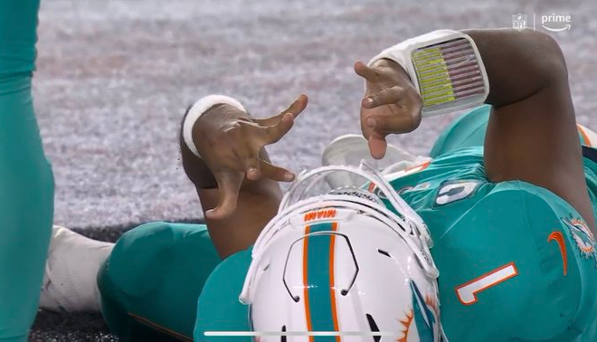

In his week three game vs. the Buffalo Bills Tua Tagovailoa underwent a sack in which his
head rapidly
impacted the ground. He showed signs of sustaining a concussion including visible confusion, shaking head,
dizziness, and collapsing. Tua entered the concussion protocol but came back into the game. Later, his
injury
was recognized as a back injury. Four days later his team played the Cincinnati Bengals where Tua would
suffer a severe concussion which resulted in a fencing response indicating substantial brain damage had
occurred (Morse, 2022). He was stretchered out and transported to a local Cincinnati head trauma center
where he underwent tests. He was later released and flew back to his home with the team. An investigation
revealed the physician who did Tua’s concussion exam was found to have mis practiced multiple parts of the
exam and Tua came back into the game risking his health furthermore. After complaints from the NFLPA the
concussion protocol was changed to if a players howes any signs of ataxia (poor muscle control that causes
clumsy movement) then they must be removed for the remainder of the game.

Dolphins QB Tua Tagovailoa suffering a fencing response
In the same week of the rule change Buccaneers tight end Cameron Brate impacted his
head with fellow
teammate Chris Godwin and never was removed from the game. According to Buccaneers team doctors
they thought he was struck in the shoulder and not the head and that was the cause of his brief ataxia.
The
NFLPA claims the situation was negligent and poor judgement calls from the doctors and Brate should have
immediately been removed from the game
There has already been an instance where a player was
removed due to ataxia and never sustained a concussion. Lions wide receiver Amon-Ra St. Brown showed
mild ataxia in his week seven game vs. the Dallas Cowboys and entered the NFL’s concussion protocol.
Video
footage shows Amon-Ra never sustained a hit to the head and his poor movement he claims awkward
movement after a play is simply a natural occurrence in the sport. Currently he still has not been
diagnosed
with a concussion and many think the rule could be too safe in this aspect
Even with more
attention to concussions more than ever before, what many claim to be the first significant culture
shock of
the results of concussions in sports in the tragic murder suicide of Chris Benoit in 2007. Chris Benoit
was
an
acclaimed professional wrestler who underwent many undiagnosed/untreated concussions in his career.
After not showing up to one of WWE’s pay-per-view events practices they asked the local police
department
to check on his well-being in his home. They would the actions of Benoit and this put the entire
wrestling
industry in a spotlight. CEO Vince McMahon claimed he always took head injuries seriously and never
could
have expected a devasting outcome like that. Benoit’s brain was examined, and it was determined to have
CTE and was similar to that of an 80-year old’s with Alzheimer’s